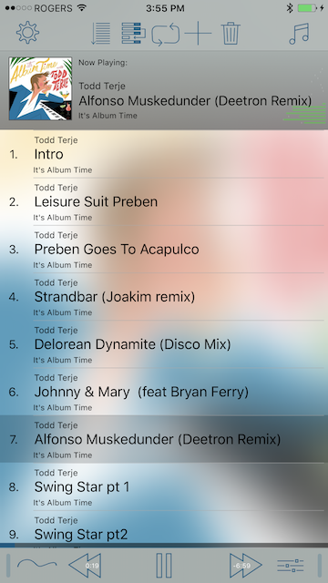
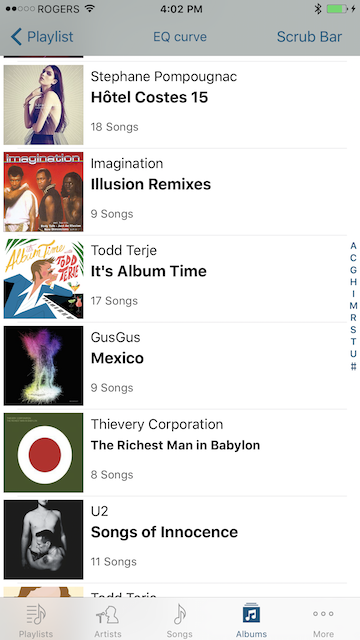
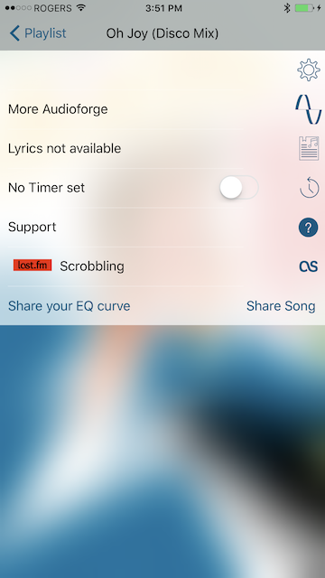
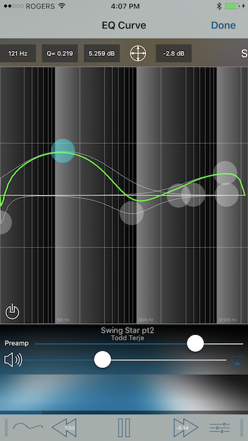
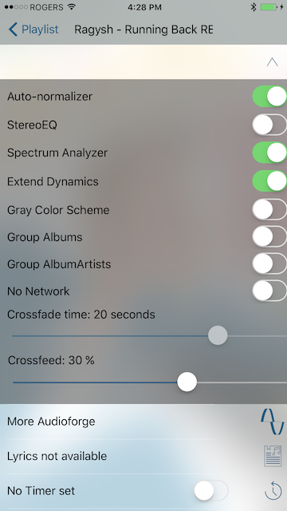
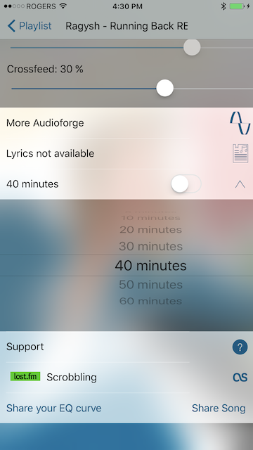
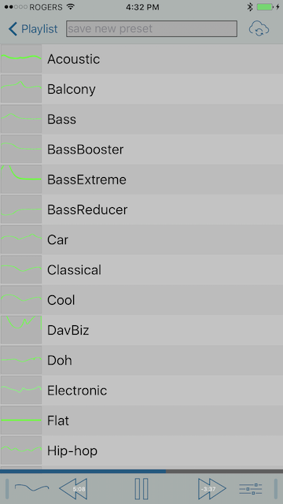

Welcome to the Equalizer manual. Here you can learn about all the functions of Equalizer.
Please read it thoroughly and if your question has not been answered, feel free to email support. We reply very quickly.
This manual is also available on the web under
www.audioforge.net/manual.html
Things we are working on
Drive mode
Overview
Now Playing screen

The now playing screen displays the selected playlist in order.
Use the buttons on top to (from the left):
Gear Button: go to the settings screen
List/Shuffle/ABC button: Toggle through: Play in order, shuffle the playlist or listen to the playlist in alphabetical order
Ordering Button: Reorder songs or delete them. You can also delete songs from the playlist (not your music library!) by swiping to the left and pressing
delete.
Repeat Button: Repeat all songs, no repeat or repeat one song
Plus Button: Add more songs to the current playlist
Trash Button: Delete the current playlist. Press the trash button twice to delete.
Music note button: Go to the Music Selection Screen
The middle section shows the current active playlist. These are the songs that Equalizer is going to play when you press play.
The bottom of the screen shows the scrub bar with the play skip, previous controls in the middle and the eq curve to the left of the previouse button and the preset button to the right of the skip button.
Pressing the eq curve will bring you to the EQ curve screen. Pressing the preset button brings you to the presets screen.
Music Selection
This shows the tabs at the bottom (Playlist, Artists, Songs, Albums, Genre) and Podcasts (top left).
Select a playlist by pressing on a song. Equalizer will take the songs from the context and build a playlist. See it in the now playing
screen. (covered just above)
The main controls outside of play/stop skip and previous are now in a table:

Use the buttons on the right of each row to open the corresponding panel. An arrow will replace the button to show that you can close this panel by pressing on it.
EQ curve screen (preamp slider)

This is where you adjust the equalizer curve.
You can use the text boxes to bring up a keyboard to type in exact values for each control point, or you can just drag the control points around.
Use the freedom of movement button to modify how you can drag the control points around. Four arrows indicate that the control points can move in all four directions.
Two arrows show that the control points can only be moved up and down.
the bypass button at the bottom left turns red when the bypass is on (= no equalization is taking place). Make sure it is white so the eq curve is applied to the audio you are listening.
Album Art (volume slider)

Below the album art, you find the transport slider to move to any spot in the current song. This slider is disabled while songs are cross fading.
Note: We are planning on bringing back the swipe over album art features so you can play/pause skip and play previous with gestures like before.
Settings (Extend dynamics)

Auto-normalizer optimizes the dynamic range of your eq curve without changing any of the audio. It prevents clipping due to extreme eq settings which would lead to distortion and possible damage of your equipment.
StereoEQ, if turned on, enables you to adjust the right and left ear differently. This is usually done if you have asymmetric hearing loss. Else you would leave this setting to off.
Spectrum analyzer is displayed in the Playlist screen. You can press on it and it will become full screen
Extend dynamics will increase the dynamic range of the music to undo some of the heavy compression that is applied to modern music. Turn it off if you encounter distortion or other artefacts in your audio
Gray Color scheme switch enables a dull gray theme instead of the album art colors and colorful random colors if no album art is present.
Group Albums allows you to select all albums of an artist or show them as list of albums of that artist
Group Album artist groups artists according to their Album Artist entry and not the specific song artist meta data
No network prevents Equalizer from ever accessing the network.
The crossfade slider allows you to set the time it takes to cross fade between songs. It is only accessible when the music is paused or stopped.
Crossfeed allows you to select how much crossfeed between the left and right channel will happen. This allows you to model a room type speaker through your headphones.
Lyrics
Shows lyrics or other information embedded in the meta data
Timer

Turn the picker to set a time, than switch the timer on. The music will stop playing after the selected time played.
Support
Find buttons to email support or leave a review in iTunes.
This panel also displays the latest manual.
Last.FM
Use your Last.FM credentials to enable scrobbling of the songs you listen to.
More info about scrobbling at http://last.fm
Share your EQ curve
Share your curve with social networks.
More Audioforge
Information about us and our other apps.
Presets

The preset screen is accessed by tapping the presets button. There are about 16 presets available. Select them by tapping the name in the list.
Next to each preset is a small representation of the curve. If the image is missing, a simple procedure (outlined below) will regenerate it.
To email a preset, swipe on the name of preset to the left and tap email.
To save a preset, tap the arrow down icon, enter the name of the new preset and (IMPORTANT, especially on iPad!) press enter on the keyboard.
To regenerate a preset image, select the preset, tap the save icon (arrow down) and resave it with the same name.
To delete any of your own presets, swipe on the name of preset to the left and tap delete.